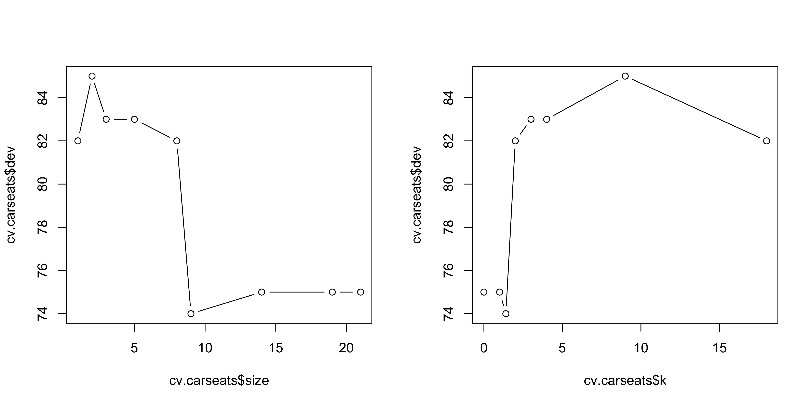
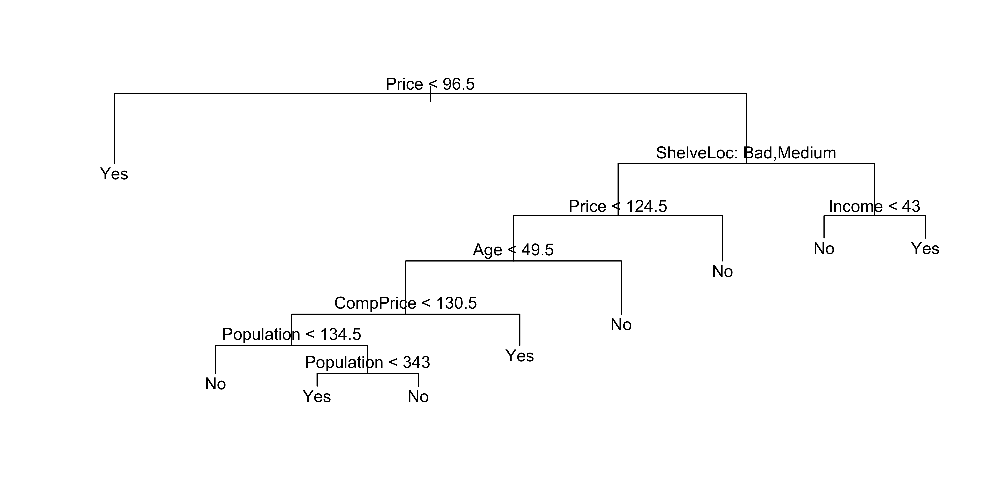
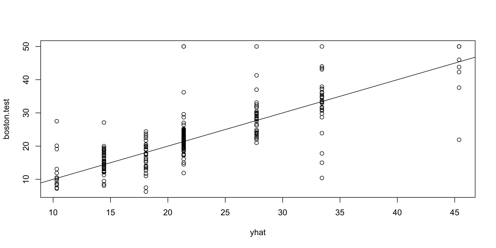

Lab 4
Decision Trees, Bagging, Random Forests, and Boosting
Fitting Classification Trees
The tree library is used to construct classification and regression trees.
We first use classification trees to analyze the Carseats data set. In these data, Sales is a continuous variable, so we begin by recoding it as a binary variable. We use the ifelse() function to create a variable called High, which takes on a value of Yes if Sales exceeds 8, and No otherwise.
Finally, we use the data.frame() function to merge High with the rest of the Carseats data.
We now use the tree() function to fit a classification tree in order to predict High using all variables except Sales.
The summary() function lists the variables that are used as internal nodes in the tree, the number of terminal nodes, and the training error rate.
Classification tree:
tree(formula = High ~ . - Sales, data = Carseats)
Variables actually used in tree construction:
[1] "ShelveLoc" "Price" "Income" "CompPrice" "Population"
[6] "Advertising" "Age" "US"
Number of terminal nodes: 27
Residual mean deviance: 0.4575 = 170.7 / 373
Misclassification error rate: 0.09 = 36 / 400 We see that the training error rate is about 9\%. For classification trees, the deviance reported in summary() is
-2 \sum_m \sum_k n_{mk} \log \hat{p}_{mk},
where n_{mk} is the number of observations in the mth terminal node that belong to the kth class. A small deviance indicates a tree that provides a good fit to the training data.
The residual mean deviance is the deviance divided by n - |T_0|, which in this case is 400 - 27 = 373.
One of the most attractive properties of trees is that they can be graphically displayed.

The most important indicator of Sales appears to be shelving location, since the first branch differentiates Good locations from Bad and Medium locations.
If we type the name of the tree object, R prints output corresponding to each branch of the tree.
node), split, n, deviance, yval, (yprob)
* denotes terminal node
1) root 400 541.500 No ( 0.59000 0.41000 )
2) ShelveLoc: Bad,Medium 315 390.600 No ( 0.68889 0.31111 )
4) Price < 92.5 46 56.530 Yes ( 0.30435 0.69565 )
8) Income < 57 10 12.220 No ( 0.70000 0.30000 )
16) CompPrice < 110.5 5 0.000 No ( 1.00000 0.00000 ) *
17) CompPrice > 110.5 5 6.730 Yes ( 0.40000 0.60000 ) *
9) Income > 57 36 35.470 Yes ( 0.19444 0.80556 )
18) Population < 207.5 16 21.170 Yes ( 0.37500 0.62500 ) *
19) Population > 207.5 20 7.941 Yes ( 0.05000 0.95000 ) *
5) Price > 92.5 269 299.800 No ( 0.75465 0.24535 )
10) Advertising < 13.5 224 213.200 No ( 0.81696 0.18304 )
20) CompPrice < 124.5 96 44.890 No ( 0.93750 0.06250 )
40) Price < 106.5 38 33.150 No ( 0.84211 0.15789 )
80) Population < 177 12 16.300 No ( 0.58333 0.41667 )
160) Income < 60.5 6 0.000 No ( 1.00000 0.00000 ) *
161) Income > 60.5 6 5.407 Yes ( 0.16667 0.83333 ) *
81) Population > 177 26 8.477 No ( 0.96154 0.03846 ) *
41) Price > 106.5 58 0.000 No ( 1.00000 0.00000 ) *
21) CompPrice > 124.5 128 150.200 No ( 0.72656 0.27344 )
42) Price < 122.5 51 70.680 Yes ( 0.49020 0.50980 )
84) ShelveLoc: Bad 11 6.702 No ( 0.90909 0.09091 ) *
85) ShelveLoc: Medium 40 52.930 Yes ( 0.37500 0.62500 )
170) Price < 109.5 16 7.481 Yes ( 0.06250 0.93750 ) *
171) Price > 109.5 24 32.600 No ( 0.58333 0.41667 )
342) Age < 49.5 13 16.050 Yes ( 0.30769 0.69231 ) *
343) Age > 49.5 11 6.702 No ( 0.90909 0.09091 ) *
43) Price > 122.5 77 55.540 No ( 0.88312 0.11688 )
86) CompPrice < 147.5 58 17.400 No ( 0.96552 0.03448 ) *
87) CompPrice > 147.5 19 25.010 No ( 0.63158 0.36842 )
174) Price < 147 12 16.300 Yes ( 0.41667 0.58333 )
348) CompPrice < 152.5 7 5.742 Yes ( 0.14286 0.85714 ) *
349) CompPrice > 152.5 5 5.004 No ( 0.80000 0.20000 ) *
175) Price > 147 7 0.000 No ( 1.00000 0.00000 ) *
11) Advertising > 13.5 45 61.830 Yes ( 0.44444 0.55556 )
22) Age < 54.5 25 25.020 Yes ( 0.20000 0.80000 )
44) CompPrice < 130.5 14 18.250 Yes ( 0.35714 0.64286 )
88) Income < 100 9 12.370 No ( 0.55556 0.44444 ) *
89) Income > 100 5 0.000 Yes ( 0.00000 1.00000 ) *
45) CompPrice > 130.5 11 0.000 Yes ( 0.00000 1.00000 ) *
23) Age > 54.5 20 22.490 No ( 0.75000 0.25000 )
46) CompPrice < 122.5 10 0.000 No ( 1.00000 0.00000 ) *
47) CompPrice > 122.5 10 13.860 No ( 0.50000 0.50000 )
94) Price < 125 5 0.000 Yes ( 0.00000 1.00000 ) *
95) Price > 125 5 0.000 No ( 1.00000 0.00000 ) *
3) ShelveLoc: Good 85 90.330 Yes ( 0.22353 0.77647 )
6) Price < 135 68 49.260 Yes ( 0.11765 0.88235 )
12) US: No 17 22.070 Yes ( 0.35294 0.64706 )
24) Price < 109 8 0.000 Yes ( 0.00000 1.00000 ) *
25) Price > 109 9 11.460 No ( 0.66667 0.33333 ) *
13) US: Yes 51 16.880 Yes ( 0.03922 0.96078 ) *
7) Price > 135 17 22.070 No ( 0.64706 0.35294 )
14) Income < 46 6 0.000 No ( 1.00000 0.00000 ) *
15) Income > 46 11 15.160 Yes ( 0.45455 0.54545 ) *The printed output includes the split criterion, the number of observations in that branch, the deviance, the overall prediction for the branch, and the fraction of observations in that branch that take on values of Yes and No. Branches that lead to terminal nodes are indicated using asterisks.
To properly evaluate the performance of a classification tree, we must estimate the test error rather than simply computing the training error. We split the observations into a training set and a test set, build the tree using the training set, and evaluate its performance on the test data.
set.seed(2)
train <- sample(1:nrow(Carseats), 200)
Carseats.test <- Carseats[-train, ]
High.test <- High[-train]
tree.carseats <- tree(High ~ . - Sales, Carseats,
subset = train)
tree.pred <- predict(tree.carseats, Carseats.test,
type = "class")
table(tree.pred, High.test) High.test
tree.pred No Yes
No 104 33
Yes 13 50[1] 0.77This approach leads to correct predictions for around 77\% of the locations in the test data set.
Next, we consider whether pruning the tree might lead to improved results. The function cv.tree() performs cross-validation in order to determine the optimal level of tree complexity.
[1] "size" "dev" "k" "method"$size
[1] 21 19 14 9 8 5 3 2 1
$dev
[1] 75 75 75 74 82 83 83 85 82
$k
[1] -Inf 0.0 1.0 1.4 2.0 3.0 4.0 9.0 18.0
$method
[1] "misclass"
attr(,"class")
[1] "prune" "tree.sequence"Despite its name, dev corresponds to the number of cross-validation errors. The tree with 9 terminal nodes results in only 74 cross-validation errors. We plot the error rate as a function of both size and k.
par(mfrow = c(1, 2))
plot(cv.carseats$size, cv.carseats$dev, type = "b")
plot(cv.carseats$k, cv.carseats$dev, type = "b")
We now apply the prune.misclass() function in order to prune the tree to obtain the nine-node tree.
prune.carseats <- prune.misclass(tree.carseats, best = 9)
plot(prune.carseats)
text(prune.carseats, pretty = 0)
How well does this pruned tree perform on the test data set? Once again, we apply the predict() function.
High.test
tree.pred No Yes
No 97 25
Yes 20 58[1] 0.775Now 77.5\% of the test observations are correctly classified, so not only has the pruning process produced a more interpretable tree, but it has also slightly improved the classification accuracy.
If we increase the value of best, we obtain a larger pruned tree with lower classification accuracy.
Fitting Regression Trees
Here we fit a regression tree to the Boston data set. First, we create a training set and fit the tree to the training data.
set.seed(1)
train <- sample(1:nrow(Boston), nrow(Boston) / 2)
tree.boston <- tree(medv ~ ., Boston, subset = train)
summary(tree.boston)
Regression tree:
tree(formula = medv ~ ., data = Boston, subset = train)
Variables actually used in tree construction:
[1] "rm" "lstat" "crim" "age"
Number of terminal nodes: 7
Residual mean deviance: 10.38 = 2555 / 246
Distribution of residuals:
Min. 1st Qu. Median Mean 3rd Qu. Max.
-10.1800 -1.7770 -0.1775 0.0000 1.9230 16.5800 Notice that the output of summary() indicates that only four of the variables have been used in constructing the tree. In the context of a regression tree, the deviance is simply the sum of squared errors for the tree.

The variable lstat measures the percentage of individuals with lower socioeconomic status, while the variable rm corresponds to the average number of rooms. The tree indicates that larger values of rm, or lower values of lstat, correspond to more expensive houses. For example, the tree predicts a median house price of 45{,}400 for homes in census tracts in which rm >= 7.553.
It is worth noting that we could have fit a much bigger tree by passing control = tree.control(nobs = length(train), mindev = 0) into the tree() function.
Now we use the cv.tree() function to see whether pruning the tree will improve performance.
In this case, the most complex tree under consideration is selected by cross-validation. However, if we wish to prune the tree, we could do so as follows.

In keeping with the cross-validation results, we use the unpruned tree to make predictions on the test set.
yhat <- predict(tree.boston, newdata = Boston[-train, ])
boston.test <- Boston[-train, "medv"]
plot(yhat, boston.test)
abline(0, 1)
[1] 35.28688The test set MSE associated with the regression tree is 35.29. The square root of the MSE is therefore around 5.941, indicating that this model leads to test predictions that are, on average, within approximately 5{,}941 of the true median home value for the census tract.